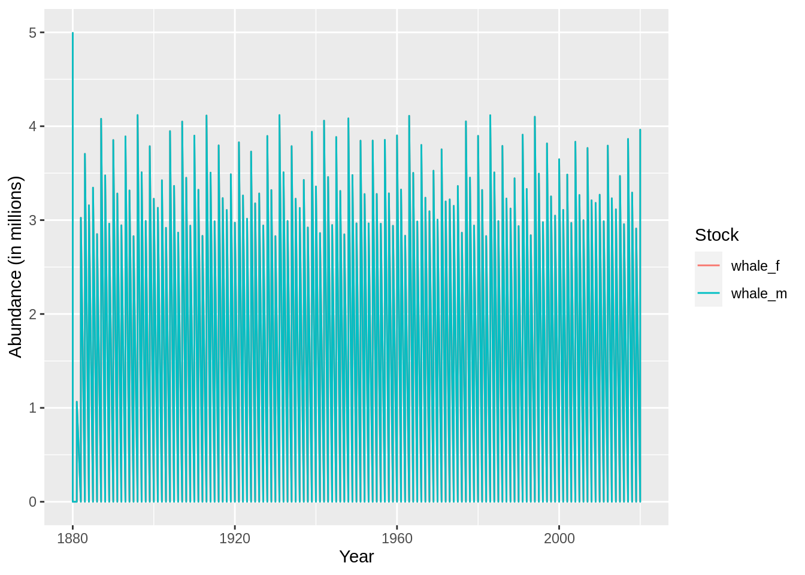

10 Setting up a model for a hypothetical whale stock
As usual we will start by setting up a Gadget model directory:
and typically we are working with a longer time horizon for whales:
schedule <-
expand.grid(year = 1880:2020, step = 1:4) %>%
arrange(year)
gadgetfile('Modelfiles/time',
file_type = 'time',
components = list(list(firstyear = min(schedule$year),
firststep=1,
lastyear=max(schedule$year),
laststep=4,
notimesteps=c(4,3,3,3,3)))) %>% ## number of time steps and step length in months
write.gadget.file(gd)and they migrate between multiple jurisdictions so let’s add areas to the model:
gadgetfile('Modelfiles/area',
file_type = 'area',
components = list(list(areas = 1:5,
size = rep(1,5),
temperature = schedule %>%
expand(year,step, area = 1:5, temperature = 5) %>%
arrange(year,step,area)))) %>%
write.gadget.file(gd)To mimic the population dynamics we need to split each stock into two stock components, males and females:
You need to know the initial number at age when at carrying capacity.
\[ N_{a0} = N_0 e^{-aM}\] where
\[ K = \sum_a N_{a0} = N_0 \frac{1-e^{-aM}}{1-e^{-M}}\] so \[N_0 = K\frac{1-e^{-M}}{1-e^{-aM}}\] so in the initial conditions we will specify the age factor to be \(e^{-aM}\) and the area factor as \(N_0\).
lw.constants <- list(estimate=c(0.001, 3)) ## arbitrary lw coeffs
init.sigma <- list(ms=rep(50, 41))
whale_m <-
gadgetstock('whale_m',gd, missingOkay = TRUE) %>%
gadget_update('stock',
livesonareas = 1:5,
minage = 0,
maxage = 40,
minlength = 50,
maxlength = 1000,
dl = 50) %>%
gadget_update('iseaten', 1) %>%
#gadget_update('naturalmortality', sprintf("#%s.M.%s", .[[1]]$stockname, .[[1]]$minage:.[[1]]$maxage)) %>%
gadget_update('doesgrow', ## note to self the order of these parameters make difference
growthparameters=c(linf='#whale_m.Linf',
k=to.gadget.formulae(quote(0.001*whale_m.k)),
alpha = '#whale_m.walpha',
beta = '#whale_m.wbeta'),
maxlengthgroupgrowth = 2,
beta = to.gadget.formulae(quote(10*whale.bbin))) %>%
gadget_update('initialconditions',
normalparam = tibble(age = .[[1]]$minage:.[[1]]$maxage,
area = 1,
age.factor = parse(text=sprintf('exp(-1*(whale_m.M+whale_m_init.F)*%1$s)',age)) %>%
purrr::map(to.gadget.formulae) %>%
unlist(),
area.factor = to.gadget.formulae(quote(prop_m*whale_k*(1-exp(-whale_m.M))/(1-exp(-40*whale_m.M)))),
mean = von_b_formula(age,linf='whale_m.Linf',k='whale_m.k',recl='whale_m.recl'),
stddev = init.sigma$ms[age+1],
alpha = '#whale_m.walpha',
beta = '#whale_m.wbeta') %>%
bind_rows(expand_grid(age = 0:40,area=2:5,age.factor='0',area.factor='0') %>%
mutate(mean = von_b_formula(age,linf='whale_m.Linf',k='whale_m.k',recl='whale_m.recl'),
stddev = init.sigma$ms[age+1],
alpha = '#whale_m.walpha',
beta = '#whale_m.wbeta'))) %>%
gadget_update('refweight',
data=tibble(length=seq(.[[1]]$minlength,.[[1]]$maxlength,.[[1]]$dl),
mean=lw.constants$estimate[1]*length^lw.constants$estimate[2]))
whale_f <-
gadgetstock('whale_f',gd, missingOkay = TRUE) %>%
gadget_update('stock',
livesonareas = 1:5,
minage = 0,
maxage = 40,
minlength = 50,
maxlength = 1200,
dl = 50) %>%
gadget_update('iseaten', 1) %>%
#gadget_update('naturalmortality', sprintf("#%s.M.%s", .[[1]]$stockname, .[[1]]$minage:.[[1]]$maxage)) %>%
gadget_update('doesgrow', ## note to self the order of these parameters make difference
growthparameters=c(linf='#whale_f.Linf',
k=to.gadget.formulae(quote(0.001*whale_f.k)),
alpha = '#whale_f.walpha',
beta = '#whale_f.wbeta'),
maxlengthgroupgrowth = 2,
beta = to.gadget.formulae(quote(10*whale.bbin))) %>%
gadget_update('initialconditions',
normalparam = tibble(age = .[[1]]$minage:.[[1]]$maxage,
area = 1,
age.factor = parse(text=sprintf('exp(-1*(whale_f.M+whale_f_init.F)*%1$s)',age)) %>%
purrr::map(to.gadget.formulae) %>%
unlist(),
area.factor = to.gadget.formulae(quote((1-prop_m)*whale_k*(1-exp(-whale_f.M))/(1-exp(-40*whale_f.M)))),
mean = von_b_formula(age,linf='whale_f.Linf',k='whale_f.k',recl='whale_f.recl'),
stddev = init.sigma$ms[age+1],
alpha = '#whale_f.walpha',
beta = '#whale_f.wbeta') %>%
bind_rows(expand_grid(age = 0:40,area=2:5,age.factor='0',area.factor='0') %>%
mutate(mean = von_b_formula(age,linf='whale_f.Linf',k='whale_f.k',recl='whale_f.recl'),
stddev = init.sigma$ms[age+1],
alpha = '#whale_f.walpha',
beta = '#whale_f.wbeta'))) %>%
gadget_update('refweight',
data=tibble(length=seq(.[[1]]$minlength,.[[1]]$maxlength,.[[1]]$dl),
mean=lw.constants$estimate[1]*length^lw.constants$estimate[2]))This sets up two stock, male and female part of the stocks. Two important parts remain in the population dynamics to capture what is needed, migration and births. Let’s start with the birth function. Only females give birth so the birth process only applies to that stock:
whale_f <-
whale_f %>%
gadget_update("doesspawn",
spawnsteps = 1,
spawnareas = 1,
firstspawnyear = 1881,
spawnstocksandratios = list(stock1 = "whale_f", ratio1 = 0.5, stock2 = 'whale_m', ratio2 = 0.5),
proportionfunction = list(sel_func = 'constant', alpha = 1),
mortalityfunction = list(sel_func = 'constant', alpha = 0),
weightlossfunction = list(sel_func = 'constant', alpha = 0),
recruitment = list(spawn_function = 'baleen',
num_births = '#whale_num_births',
resil_a = '#whale_resil.a',
## everything is in multiples of 1e4
K = to.gadget.formulae(quote(whale_k*1e4)),
z = '#whale_z'),
stockparameters = list(mean = '#whale_f.recl',
stddev = '#whale_f.recsd',
alpha = '#whale_f.walpha',
beta = '#whale_f.wbeta'))Migratio: area 1 is a spawning area, areas 2 to 5 are feeding areas.
whale_f <-
whale_f %>%
gadget_update('doesmigrate',
yearstepfile = 'Modelfiles/migrationtime',
defineratios = 'Modelfiles/migration') %>%
write.gadget.file(gd)
whale_m <-
whale_m %>%
gadget_update('doesmigrate',
yearstepfile = 'Modelfiles/migrationtime',
defineratios = 'Modelfiles/migration') %>%
write.gadget.file(gd)Let’s define the migration matricies from spaning to feeding areas:
feeding_migration <-
tibble(from = 1, to = 2:5, prop = sprintf('#feed_area_prop.%s',to))
spawn_migration <-
tibble(from = 2:5, to = 1, prop = 1)
no_migration <- ""
gadgetfile('Modelfiles/migration',
components = list(migrationmatrix = list(
name = 'feeding',
feeding_migration %>% unite(tmp,from:prop,sep = " ") %>% .$tmp %>% paste(collapse = '\n\t')),
migrationmatrix =list(
name = 'spawning',
spawn_migration %>% unite(tmp,from:prop,sep = " ") %>% .$tmp %>% paste(collapse = '\n\t')),
migrationmatrix = list(name = 'stay_put',
no_migration)
)) %>%
write.gadget.file(gd)and the schedule when each matrix is used:
gadgetfile('Modelfiles/migrationtime',
file_type = 'data',
components = list(schedule %>%
#filter(step %in% c(1,2)) %>% ## migration occurs at the beginning of the timestep
mutate(defineratios = case_when(step == 2~'feeding',
step == 1~'spawning',
TRUE~'stay_put')))) %>%
write.gadget.file(gd)Setting up fleets with random numbers
whale_catch <-
schedule %>%
mutate(area = 3,
number = rbinom(n(),50,runif(n())),
number = ifelse(step == 1, 0, number))
whale_catch <-
structure(whale_catch,area_group = list(`3`= 3))
gadgetfleet('Modelfiles/fleet',gd,missingOkay = TRUE) %>%
gadget_update('numberfleet',
name = 'whale_fleet',
livesonareas = 3,
suitability =
list(whale_m=list(type='function',suit_func = 'exponentiall50',alpha = "#whale_fleet.alpha", l50 = "#whale_fleet.l50"),
whale_f=list(type='function',suit_func = 'exponentiall50',alpha = "#whale_fleet.alpha", l50 = "#whale_fleet.l50")),
data = whale_catch) -> tmp
tmp$component$livesonareas <- 3 # weird bug
tmp$component$amount$data$area <- 3
tmp %>%
write.gadget.file(gd)10.0.1 Run Gadget and set initial parameters
## [1] "whale-model"
## attr(,"mainfile")
## [1] "main"
## attr(,"class")
## [1] "gadget.variant" "list"read.gadget.parameters(paste(gd,'params.out',sep='/')) %>%
init_guess('_f.Linf',1100,lower = 800, upper = 1400, optimise = 1) %>%
init_guess('_m.Linf',900,lower = 800, upper = 1400, optimise = 1) %>%
init_guess('\\.k$',180,lower = 150, upper = 300, optimise = 1) %>%
init_guess('_k$',1000,lower = 5, upper = 3000, optimise = 1) %>%
init_guess('\\.bbin',180,lower = 150, upper = 300, optimise = 1) %>%
init_guess('prop_m',0.5,lower = 0, upper = 1, optimise = 0) %>%
init_guess('init.F',0,lower = 0, upper = 1, optimise = 0) %>%
init_guess('recl',50,lower = 50, upper = 300, optimise = 1) %>%
init_guess('\\.k$',180,lower = 150, upper = 300, optimise = 1) %>%
init_guess('\\.walpha$',0.001,lower = 0, upper = 1, optimise = 0) %>%
init_guess('\\.wbeta',3,lower = 0, upper = 4, optimise = 0) %>%
init_guess('\\.recsd$',50,lower = 0, upper = 300, optimise = 1) %>%
init_guess('\\.M$',0.16,lower = 0, upper = 1, optimise = 0) %>%
init_guess('num_births',2,lower = 1, upper = 2, optimise = 1) %>%
init_guess('feed_area_prop',1/4,lower = 0, upper = 1, optimise = 0) %>%
init_guess('resil.a',1.6,lower = 0, upper = 10, optimise = 0) %>%
init_guess('_z',2,lower = 0, upper = 3, optimise = 0) %>%
init_guess('fleet.alpha',0.08,lower = 0, upper = 1, optimise = 1) %>%
init_guess('fleet.l50',300,lower = 150, upper = 600, optimise = 1) %>%
write.gadget.parameters(paste(gd,'params.in',sep='/'))
gadget_evaluate(gd,params.in = 'params.in', log = 'run.log')## [1] "whale-model"
## attr(,"mainfile")
## [1] "main"
## attr(,"class")
## [1] "gadget.variant" "list"## [1] "Reading input data"
## [1] "Running Gadget"
## [1] "Reading output files"
## [1] "Gathering results"
## [1] "Merging input and output"